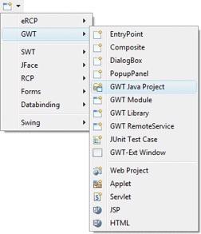
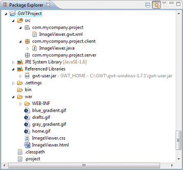

|
 |
In order to use GWT components,
you need to make sure that all of the appropriate GWT
jar files are on your classpath. The GWT Java Project
wizard creates a standard Java project which has all of the needed
libraries added.
The wizard can be
selected from the drop down wizard menu or from the
Eclipse New or New Project wizards.
To use the wizard, enter the project name and specify where the project should be located. Optionally create a GWT Module during initial project creation.
|
|
|
|
||
|
The wizard creates the project with all of the necessary configuration and resource files.  |
||